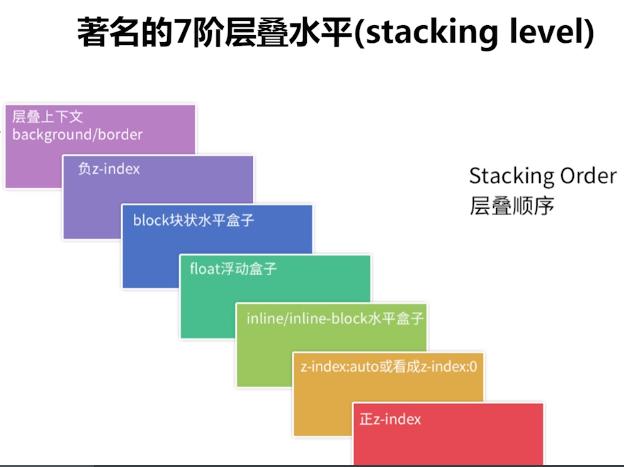

给第一个span的父级div添加了opacity为一个小于1的值
先来让我们看一张关于层叠水平的图。这是默认情况下的堆叠顺序。
每一个在HTML文档中的元素既可以在其他元素的前面，也可以在其他元素的后面。这就是所谓的堆栈顺序。决定这个顺序的规则被十分清楚的定义在说明文档中.
当z-index和position属性不被包括在内时，这些规则相当简单：基本上，堆栈顺序和元素在HTML中出现的顺序一样。当你把位置属性也包括在内介绍时，任何定位(不同于static的)元素（和他们的子元素）都在非定位元素前被显示出来。
最后，当z-index被提及时，事情变的有点儿复杂。最初，很自然的假设带有高z-index值的元素会在带有低z-index值的元素前面，但是后来发 现没那么简单。首先，z-index只对定位元素起作用。如果你尝试对非定位元素设定一个z-index值，那么肯定不起作用。其次，z-index值能 创建堆栈上下文环境，并且突然发现看似简单的东西变的更加复杂了。
堆栈上下文是HTML元素的三维概念，这些HTML元素在一条假想的相对于面向（电脑屏幕的）视窗或者网页的用户的 z 轴上延伸，HTML 元素依据其自身属性按照优先级顺序占用层叠上下文的空间。如果一个元素被包含在处于底部堆栈顺序的堆栈上下文中，那么就没有办法先出现于其他处于更高的堆栈顺序的不同堆栈上下文中，就算 z-index值是十亿也不行！
在堆栈上下文（stacking context）中 ，子元素的堆栈顺序还是按照上述规则。重点是，子元素的z-index值只在父元素范围内有效。子堆栈上下文被看做是父堆叠上下文中一个独立的模块，和相邻的堆栈上下文完全没关系。也就是说，一个元素的堆栈顺序，不仅仅取决于它自身的 z-index ，更要看它所处在的堆栈上下文，如果所处的上下文的层级很低，即使他本身的 z-index 设置的很高，也无法移到其他更高堆栈上下文元素的上面去。
IE 中 z-index跟标准浏览器中的解析有一个小小的区别，那就是上面说的产生堆栈上下文中的几个条件中，对第二个条件的支持的区别，在标准浏览器中元素必须是有 z-index 值的同时要有 position 属性，且值不为 static ，满足这两个条件，才会产生一个新的堆栈上下文，但低版本的 IE 中就不管这么多了， 只要你设置了 position 值不为 static ，他就会生成一个新的堆栈上下文。
至于解决办法，只要在可能出现定位元素相互覆盖的情况时，明确指定定位元素的 z-index 的值，就可以避免意外的情况了。